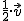

1.2. Operaciones con vectores
Como ocurre con cualquier otro tipo de habitante del país de las matemáticas, como por ejemplo los números, los vectores también podemos sumarlos, restarlos, multiplicarlos por un número e, incluso, multiplicarlos entre ellos, como también veremos más adelante.

¿Y para qué vale sumar dos vectores?
Pues tiene mucha utilidad, pero simplemente citaremos para empezar un par de ellas.
¿Cómo despega un avión? Pues despega, mediante la suma de dos vectores de fuerza, uno correspondiente al desplazamiento hacia adelante (en horizontal) y otro correspondiente a la fuerza que tira de él hacia arriba (en vertical) de propulsión.
¿Quieres otra aplicación? Un ciclista ha realizado una ruta entre varios pueblos cercanos al suyo, pero de manera improvisada, y ha pinchado en el 5º municipio. Quiere conocer la trayectoria completa, la distancia recorrida y la distancia a la que se encuentra de su casa, puesto que el seguro que tiene, no le cubre asistencia, a distancias a su domicilio superiores a 75 km.
¿Cómo se suman y/o se restan vectores?
Gráficamente, la suma (resta) de vectores se puede realizar siguiendo dos métodos distintos. Por supuesto, por ambos métodos, se obtiene el mismo resultado.
Métodos gráficos para realizar la suma de dos vectores.
|
Primer método (Regla del Paralelogramo) Se traslada uno de los vectores (si fuese necesario), paralelamente hacia el otro hasta que sean concurrentes (tengan el mismo origen). Se prolongan los extremos, paralelamente, formando un paralelogramo. Finalmente, se traza la diagonal de dicho paralelogramo, que será el vector suma que buscamos. |
|
Segundo método (Encadenamiento) Se traslada uno de los vectores (si fuese necesario), paralelamente hacia el otro, hasta colocarlo a continuación del primero. Es decir, justo en el extremo del primero se coloca el origen del segundo, como si estuviésemos colocando eslabones de una cadena. Finalmente, se une el origen del primero con el extremo del segundo, dando lugar al vector suma que buscamos. |
Métodos gráficos para realizar la resta de dos vectores.
Observemos que restar dos vectores, \(\vec{u}-\vec{v}=\vec{u}+(-\vec{v})\), es lo mismo que sumar el primero con el opuesto del segundo. Así, primero obtendremos el opuesto del segundo, \(-\vec{v}\), y luego realizaremos la suma por cualquiera de los dos métodos anteriormente descritos.
Veamos en el siguiente vídeo cómo sería el método gráfico:
Al mismo tiempo, dijimos que las operaciones con los mismos podían realizarse en los dos mundos: en el geométrico (gráficamente) y en el algebraico, coordenadas (analíticamente)
Método analítico para realizar la suma (y la resta) de dos vectores.
|
- La suma de dos vectores libres \(\vec{u}=(u_1,u_2)\) y \(\vec{v}=(v_1,v_2)\) es otro vector libre que se obtiene sumando las componentes de los dos vectores dados: \(\vec{u}+\vec{v}=(u_1,u_2)+(v_1,v_2)=(u_1+v_1,u_2+v_2)\) - La resta de dos vectores libres es igual a la suma del primero con el opuesto del segundo. La resta de dos vectores libres es otro vector que se obtendrá restando las componentes del segundo vector a las del primero: \(\vec{u}-\vec{v}=\vec{u}+(-\vec{v})=(u_1,u_2)+(-v_1,-v_2)=(u_1-v_1,u_2-v_2)\) |
El siguiente vídeo podemos ver el método analítico:
En el siguiente applet de Geogebra puedes poner en práctica lo aprendido sobre la suma y la resta de vectores. Activa/desactiva la casilla Mostrar coordenadas según te interese en cada caso. Para ver uno u otro método, mueve el punto en el deslizador correspondiente.
Para la resta de vectores no se incluirá ningún applet específico, puesto que no se considera necesario. Antes de realizar la resta, deberás obtener el opuesto del segundo vector y, finalmente realizar la suma.
Practica cuanto necesites con él.
¿Cómo expresarías el doble de un desplazamiento determinado, haciendo uso de los vectores? ¿Y quedarte a mitad del camino de un determinado itinerario que hayas previsto? ¿Y realizar el mismo desplazamiento pero en sentido contrario?
Esto es posible efectuarlo de una forma cómoda mediante la multiplicación por escalar. En el primer caso bastaría con , en el segundo con

y en el tercero con
Definición. Producto de un vector por un escalar.
| El producto de un vector \(\vec{v}\) por un escalar, \(k\) (un número real), es un nuevo vector que escribiremos como \(k \cdot \vec{v}\). |
Ejercicio Resuelto
Dados los vectores \(\vec{u}=(6,-8), \ \vec{v}=(0,-5), \ \vec{w}=(3,-4)\) , realiza las siguientes operaciones, gráficamente, en un papel de cuadriculado y calcula las coordenadas.
(1) \(\vec{u}+\vec{w}\)
(2) \(\vec{u}-\vec{v}+2\vec{w}\)
(3) \(-\dfrac{1}{2}\vec{u}\)
(4) \(-2\vec{w}+\vec{u}\)
Todas las operaciones que hemos visto en la sala de operaciones han dado como resultado un nuevo vector. La suma y la resta de vectores y la multiplicación de un vector por un número, dan como resultado un nuevo vector.
Pero, ésto no siempre es así. Vamos a tratar a continuación una operación en la que a partir de multiplicar dos vectores, obtenemos un número (un escalar), no un vector. De ahí que se conozca precisamente con el nombre de producto escalar, porque el resultado del producto es un escalar.
Definición. Producto escalar.
|
El producto escalar de dos vectores \(\vec{u}=(u_1,u_2)\) y \(\vec{v}=(v_1,v_2)\) es un número. La fórmula que permite calcular su valor es: \(\vec{u} \bullet \vec{v}=|\vec{u}| \cdot |\vec{v}| \cdot \cos{\widehat{\vec{u},\vec{v}}}\)
|
donde \(|\vec{u}|\) y \(|\vec{v}|\) son los módulos de los dos vectores y \(\cos{\widehat{\vec{u},\vec{v}}}\) indica el coseno del ángulo que forman los orígenes de ambos vectores.
· La fórmula anterior permite obtener el ángulo que forman, conocidas las coordenadas de los dos vectores, simplemente despejando:
\[\cos{\widehat{\vec{u},\vec{v}}}=\dfrac{\vec{u} \bullet \vec{v}}{|\vec{u}| \cdot |\vec{v}|}\]
|
Analíticamente, si conocemos las componentes (coordenadas) de los vectores, el producto escalar se obtiene como sigue: \[\vec{u} \bullet \vec{v}=u_1 \cdot v_1 + u_2 \cdot v_2\] |
Algunas propiedades interesantes del producto escalar son:
- Dos vectores, no nulos, \(\vec{u}=(u_1,u_2)\) y \(\vec{v}=(v_1,v_2)\) son perpendiculares, si y solo si su producto escalar vale 0. Es decir:
\[\vec{u} \perp \vec{v} \Longleftrightarrow \vec{u} \bullet \vec{v}=0\]
2. El producto escalar de un vector consigo mismo es igual a su módulo al cuadrado. Dicho de otro modo:
\[\vec{u} \bullet \vec{u}=|\vec{u}|^2\]